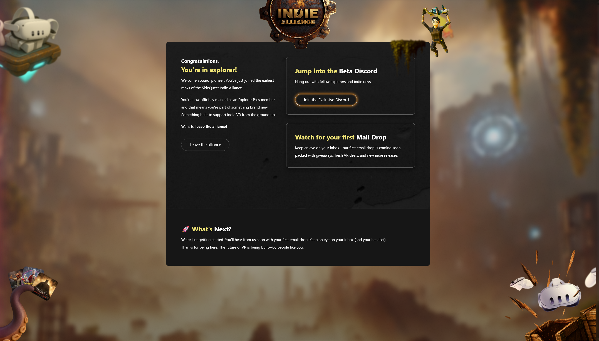

SideQuest VR · 2025
Indie Alliance: Validating a Community-Led Revenue Model at SideQuest
Breathing new life into our community and laying the foundation for a future sustainable revenue model.
Context
SideQuest is a discovery and sideloading platform for VR: scrappy, indie-friendly, and trusted by a user base that's deeply skeptical of anything that feels corporate or extractive. As PM, I was tasked with exploring sustainable revenue models at a time when the company was running on startup funding and needed a path to something more durable -- a classic "we need money" problem statement.
Problem
The obvious monetization plays (paywalls, display ads, aggressive affiliate programs) were non-starters for our audience. We needed a model that could generate real revenue without burning the brand equity that spawned a living SideQuest community in the first place.
User research and survey data pointed toward something more interesting than a simple subscription. Users talked about wanting to support indie developers directly. They missed the old community Discord server. They showed up reliably for giveaways. Developers wanted direct access to players for feedback and testing, key distribution, and visibility. There was a latent community that wanted to be activated.
The question wasn't whether people would pay. It was whether we could build something worth paying for, and whether we could get there without overpromising before we were ready.
What I Did
The early ideation phase got big fast. Leadership was understandably excited, and the feature list kept growing. There was also pressure to announce a future paid tier publicly, to signal momentum.
I pushed back hard on the announcement. We'd have one shot to tell that story, and if we told it before we had something real to show, the narrative would write itself on Reddit: "SideQuest is adding paywalls!?" That framing, once out, would be nearly impossible to walk back. Our design lead reframed the product model in a way that finally moved leadership: think Discord Nitro, not a paywall. Not driven by a single feature, but a bundle where any given person finds the thing that justifies the cost. The value compounds across the set. That framing changed the conversation and bought us the room to do this right.
So we scoped a v0: a free tier that would validate demand, rebuild community infrastructure, and give us a live environment to test features before committing to a paid model. Crucially, we said nothing publicly about a paid v1. No hints, no teases. Just: here's something for the community, support indie devs, follow along.
Getting to launch on time meant making fast, defensible cuts. Features that needed more design or eng time got formally scoped and moved to v1.0. They weren't dropped, but deliberately deferred with sizing attached so we'd be ready to move when the time came. I fought those battles mostly on the basis of time and sequencing, not quality: we can't do this well right now, and doing it poorly is worse than doing it later.
Outcome
We launched during our winter indie spotlight event. v0 included the revamped giveaways experience, the rebuilt Discord server, a featured video module for the CMS, and a proof-of-concept Stripe integration kept internal. The Discord alone turned out to be bigger than we expected. People had genuinely missed it, and the energy on launch day was a signal worth paying attention to.
25,000+ users joined in the first six months, which was well above our expectations for something with no immediate paid value. The Discord became an active channel for connecting developers and players directly. We ran two rounds of user research on v1 paid features and had a clear, prioritized backlog ready for formal scoping... then the VR market contracted, and growth slowed. As of now, v1 is indefinitely paused but ready to go when resources allow.

What I'd Do Differently
Start everything sooner. We committed to the spotlight event as a deadline before we fully agreed on scope, which meant the back half of the project was crunch. The right move was to either lock the date first and scope backward from it, or lock the scope first and let the date follow. We tried to do both simultaneously and it showed.
I'd also push harder to get pricing and packaging research done in parallel with feature research. We completed two rounds of UR on what people wanted, but we never got to the question of what they'd actually pay, and in what configuration. That's not a small gap. It's the thing that would have told us whether the Nitro model held up under real willingness-to-pay data, or whether we needed to rethink the bundle. Going into v1 without that answer would have been a risk.